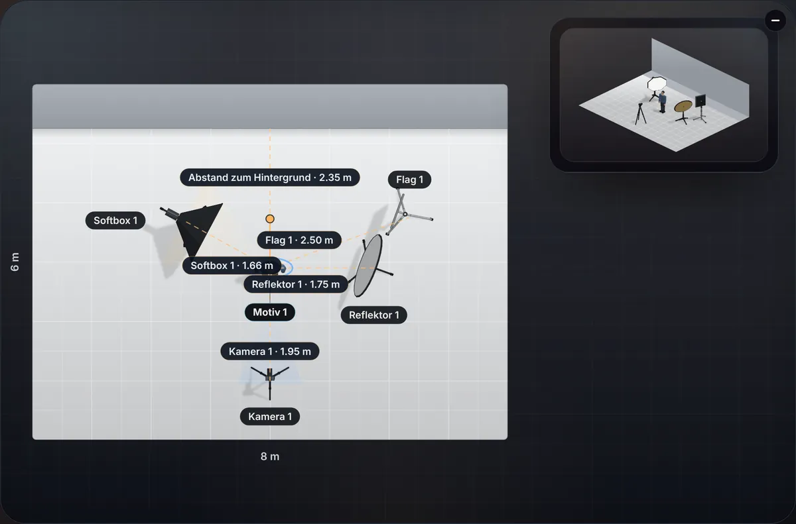
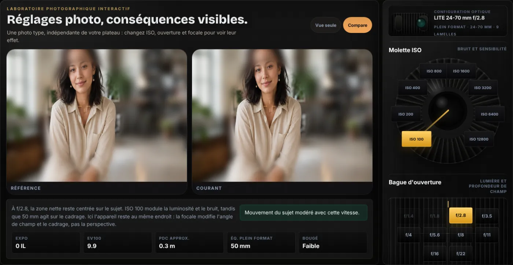
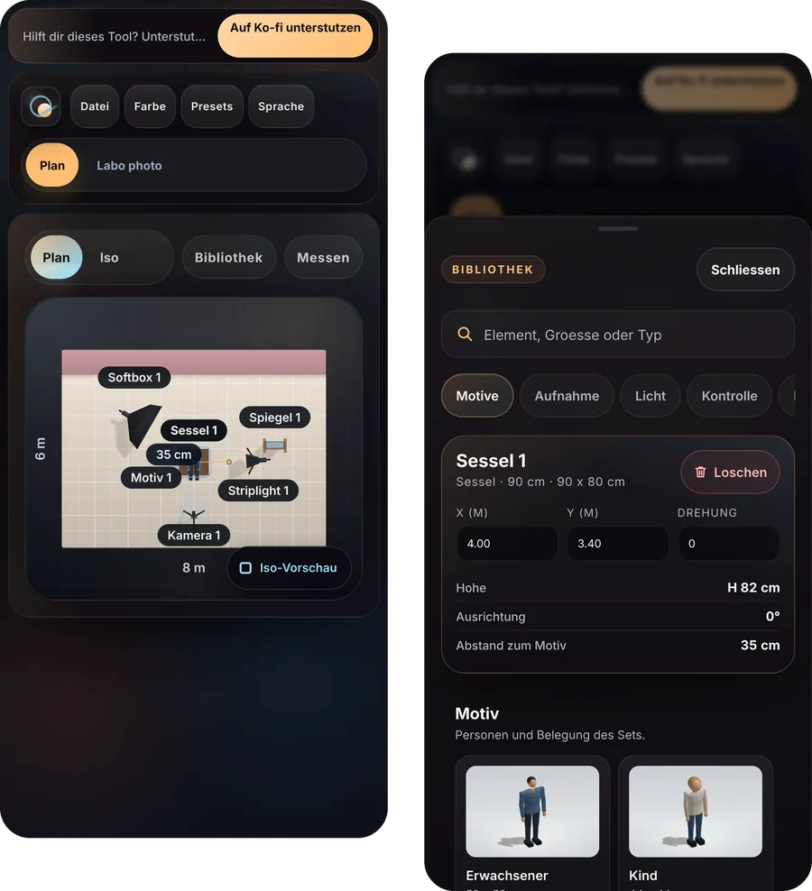

Portrait-Lichtdiagramm
Eine einfache Basis für Studio-Portraits mit 45-Grad-Keylight, Fill-Control und druckbarem Plan.
Fotostudio-Planer
Platziere Model, Kamera, Licht und Zubehör auf einem maßstabsgetreuen Grundriss. LITE Studio berechnet die Abstände, zeigt die Szene in 3D und exportiert ein klares Schema für dein Team.

So funktioniert es
Wähle eine von 46 fertigen Szenen (Porträt, Beauty, Produkt, Boudoir, Interview…) oder beginne in einem leeren Studio von 8 × 6 m.
Füge Equipment aus der Bibliothek hinzu, verschiebe es mit Maus oder Finger und drehe es mit dem orangefarbenen Griff. Jedes Element hat seine echten Maße.
Der Messmodus zeigt die wichtigen Abstände. Danach exportierst du den Plan als PNG oder PDF oder kopierst das Bild, um es direkt zu verschicken.
Was LITE Studio kann
Grundriss und 3D-Ansicht
Softboxen, Schirme, C-Stands, Reflektoren, Möbel: Alle 80 Elemente der Bibliothek sind in ihren echten Maßen modelliert. Wechsle von der Draufsicht in die 3D-Ansicht, um Volumen und Platz rund um das Model zu beurteilen.

Messen
Aktiviere den Messmodus: LITE Studio zeigt den Abstand vom Model zum Hintergrund, zur Kamera und zu jeder Lichtquelle, dazu eine geschätzte Blende bei ISO 100 für das Hauptlicht. Eigene Messungen von Punkt zu Punkt sind ebenfalls möglich.

Fotolabor
Ändere ISO, Blende und Brennweite und sieh das Ergebnis sofort an einem Foto: Rauschen, Belichtung, Schärfentiefe und Bildausschnitt. Der Vergleichsmodus zeigt das Referenzbild neben deiner Einstellung.

Am Set
Auf Tablet und Smartphone wird die Oberfläche kompakt: Die Bibliothek öffnet sich als Panel, der Plan wird mit zwei Fingern gezoomt und alle Schaltflächen bleiben gut antippbar. Deine eigenen Presets bleiben im Browser gespeichert.

Presets
Jedes Preset ist ein glaubwürdiger Ausgangspunkt: laden, an dein Studio anpassen und als eigene Version speichern.
Kostenlos, ohne Konto, ohne Installation. Öffne die App und lade ein Preset zum Ausprobieren.
Weiterführend
SEO-Seiten
Diese Seiten beantworten konkrete Bedürfnisse und führen direkt in die App mit dem passenden Preset.
Eine einfache Basis für Studio-Portraits mit 45-Grad-Keylight, Fill-Control und druckbarem Plan.
Mobiliar, Stimmung, Hintergrund, Wege und Licht für ein Boudoir-Shooting im Studio.
Ein klares Video-Studio-Setup für Interviews, gefilmte Podcasts und Corporate-Drehs.